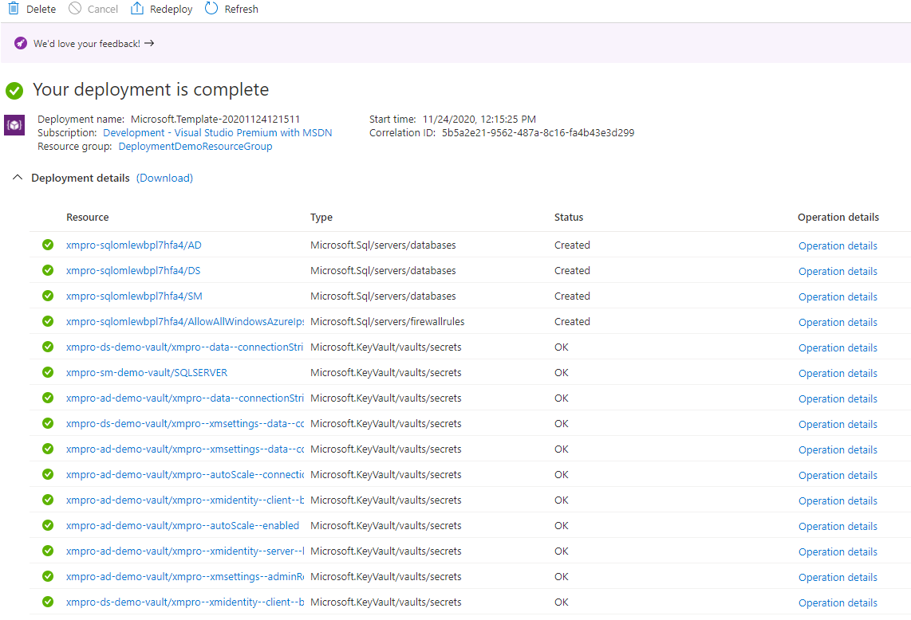
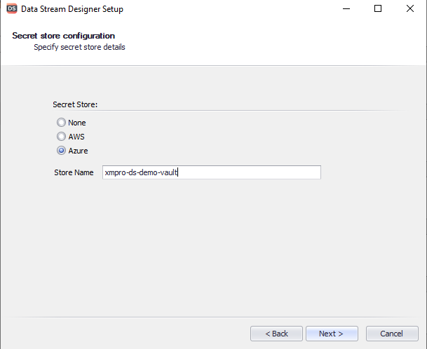
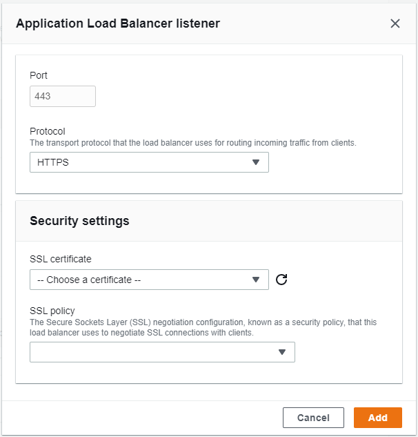
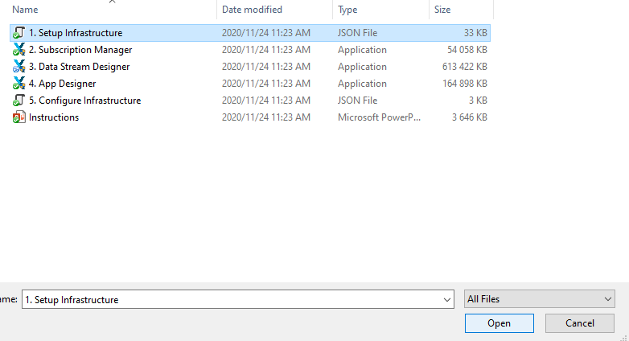
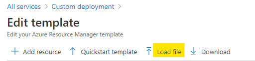

Data Grid
A Data Grid allows you to display important information to the user in a grid format. This is useful for displaying all records from a database, or a selected number of records from a database.

Note
Some images in this document may be missing and need to be migrated from the original GitBook documentation.
Data Grid Properties
Appearance
Common Properties
The visibility property is common to most Blocks;
See the Common Properties article for more details on common appearance properties.
Show Borders
Will show borders around the grid.

Show Headers
Will show the headers/column title.

Show Column Lines
Will show a vertical line between columns.

Show Row Lines
Will show a horizontal line between rows.

Alter Row Color
The background color of the odd rows will be grey.

Show Column Chooser
Column Chooser button will be displayed and the user has the ability to hide/show columns.

Enable Paging
The default option is to show all the results. The user can specify how many items should be displayed per page and pages will be displayed under the grid.

Behavior
Common Properties
The disabled property is common to most Blocks;
See the Common Properties article for more details on common behavior properties.
Allow Selection
Allows the user to select an item from the grid.

Allow Multiple Selection
Allows the user to select multiple items from the grid.

Allow Adding
Add button will be displayed and the user can add/insert rows by clicking on it.

Allow Deleting
The delete button will be displayed on the right side of the row.
Allow Updating
This will enable editing the row by clicking the item.

Allow Search
This will let you search the grid with the search bar.
Edit Mode
Grid data can be edited in several modes. Set the Edit Mode property to specify the mode.
| Mode | Description |
|---|---|
| Batch | A user edits data cell by cell. Changes are not updated until a user clicks the Save button. In this mode, the "Add" button is found above the grid rather than in the grid's header row, along with the Save and Reset buttons. |
| Batch With External Save | A user edits data cell by cell. Changes are not updated until a user clicks an external Block (e.g. a Button) with Update Data Sources corresponding to the grid's data source. |
| Cell | A user edits data cell by cell. Changes are saved once a cell loses focus, or discarded if a user presses Esc. |
| Row | A user edits data row by row. When a user clicks an "Edit" button in the right-most column, the corresponding row enters the editing state, and the "Save" and "Cancel" buttons appear in the right-most column. Pressing the "Save" button will update your data source immediately. |
Allow Search
This will show a search bar at the top of the Data Grid.

Allow Export to Excel
The export button will be displayed and by clicking it will export the grid into an excel file.
Enable Column Filtering
This will let you filter the results per column by clicking the filter icon next to the column name.

Enable Row Filtering
The search bar will be added for each column and the user can search the results.

Enable Filter Panel
Create Filter button will be displayed and clicking it will open a Filter Builder. If a user changes the filter expression in the Filter Panel the changes are reflected in the Enable Row Filtering and Enable Column Filtering, and vice versa.
Default Filter
This defines the default filter selected in the Filter Panel. Anyone visiting the page for the first time will have the same filter applied to the Data Grid. For example, every time this Data Grid has loaded records that start with the letter "C" are displayed. The filter will still be applied if the filter panel is disabled, which will prevent the user from changing the filter.

Allow Grouping

Auto-Adjust Column Widths
Will try to adjust the width of the column to show results as much as possible.

Store User Customization
Changes made to the grid are saved in the cookies on your browser between page refresh and window changes. This can include column reordering, resizing and applied filters.
Value
Common Properties
The value property is common to most Blocks;
See the Common Properties article for more details on common value properties.
Data Source
Common Properties
Properties that are common to most Blocks include: filter, sort, show # of results, and skip # of results;
‌See the Common Properties article for more details on common Data Source properties.
The Data Source property is required for the Data Grid.
Columns
List of all columns from the selected Data Source. Users can reorder or change the visibility, name, type, alignment, width, set it as read-only, and set the Editor type.
Format
If the Type field is set to Number, you have the option to format the field as default (none), currency, or percentage.

Currency
If the Format field is set to Currency, choose which currency symbol to display.
Date Time Format
If the Type field is set to Date or Date Time, you can enter a custom format for the Date or the Date Time.
By default, the values are displayed in the user's browser's locale format.
Editor Type - Lookup
The lookup field will only appear when the cell or the row is in edit mode. The Lookup editor type has three configurable properties.
The column's value is automatically mapped to the Text property.
For more details about Data Source see the Common Properties article for more details on common data source properties.
Display Field is the value of what text will be displayed.
Value Field selection from the new Data Source needs to match the value that is in the cell.
Editor Type - Hyperlink
It will show the value in the field as a Hyperlink. The Hyperlink editor type is based on the Hyperlink block. See the Hyperlink article for more details on how to configure the Hyperlink block.
The column's value is automatically mapped to the Text property.
Editor Type - Indicator

The value in the field has to be a valid color format. The indicator editor type is based on the Indicator block with less configurable options. See the Indicator article for more details on how to configure the Indicator block.
The column's value is automatically mapped to the Text property.
Open in New Tab/Window
Tick for the URL to open in a new tab/window, instead of redirecting the current tab. This applies when the Editor Type is set to 'Hyperlink'.
Note
We recommend opening XMPro URLs in the same tab/window - as users may experience degraded performance when a large number of XMPro tabs are opened.
Column Reordering
Reordering columns is possible at runtime and is enabled by default on every Grid. Users can change the order by dragging one column to another position.
Column Resizing
Resizing columns is possible at runtime and is enabled by default on every Grid. Users can resize the columns by dragging the edge of the column.
Action
Common Properties
Properties that are common to most Blocks include: Navigate to and Show Confirmation Dialog;
See the Common Properties article for more details on common action properties.
Override Grid Values
When saving grid rows to a Data Source, you may want to override some values. For instance, if you want to update a column with the current date and time, or replace a column with a Parameter or Variable.
To do this follow these instructions:
- On the Data Grid, enable the Allow Updating property and set the Edit Mode to Batch With External Save.
- Then, under the Action accordion in the Block Properties of a Button or other Block, click the button with the gear icon of the corresponding Data Source to the Data Grid.
- Press the + button to the right of Override Values, select the column to override, and press Add.
- In the Value column of Override Values, choose a static or dynamic value.
- Press Apply on the Update Data Source page, and Save the App Page.

Last modified: May 29, 2025